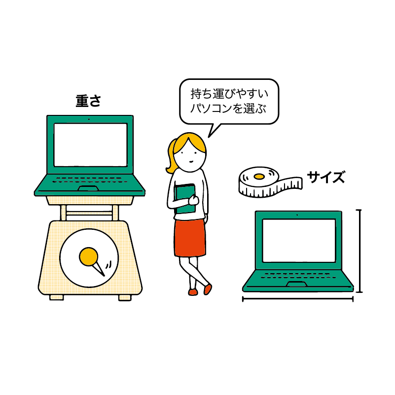
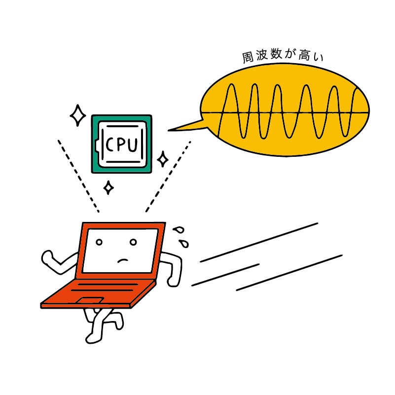
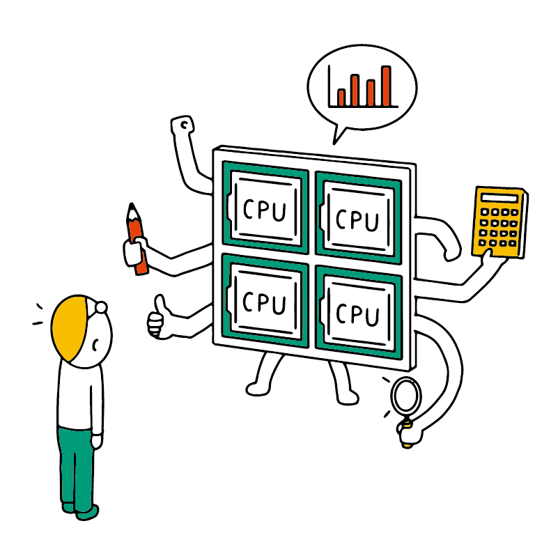
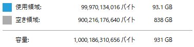

パソコンの選び方
この付録では、まだパソコンをお持ちでない方や買い換えようとしている方に向けて、パソコンの選び方の参考となる指針を解説します。
ただし、パソコンは安い買い物ではありません。この講座の情報以外にも店頭のスタッフさんに相談するなどして、じっくりと自分に合ったパソコンを選びましょう。
パソコンを買う場所
実際の家電量販店でもネット通販でも購入できますが、初期設定やサポートを行ってくれる店舗も多いので、パソコンに不慣れな場合は家電量販店で購入する方が安心です。
ネット通販は店頭で購入するより低価格なことも多いですが、店頭と異なり、初期設定などは自分で行う必要があります。
もし、周りに初期設定を手助けしてくれる人がいる場合はネット通販の利用を検討してよいかもしれません。
また、中古のパソコンは性能を見極めるのが難しかったり、必要なソフトが入っていなかったりする場合があります。また、故障したときのサポートも得にくいため、故障したときには新品より高くつくこともあります。
初めてパソコンを買う場合はなるべく新品を買う方が安心だと言えるでしょう。
単位の知識
長さの単位はm（メートル）、重さの単位は g（グラム） であるように、パソコンに関連する事柄にも単位があります。
その中でもよく使うのが情報量（データの大きさ）の単位 B（バイト） です。バイト自体はかなり小さい単位なので、KB（キロバイト）や GB（ギガバイト）のような単位として使います。
このK（キロ）やG（ギガ）などについて覚えておきましょう。
- 1000 B（バイト） = 1KB（キロバイト）
- 1000 KB = 1MB（メガバイト）
- 1000 MB = 1GB（ギガバイト）
- 1000 GB = 1TB（テラバイト）
となります。
他には CPU に関して、周波数を示す Hz（ヘルツ）という単位が登場します。
これも同様で、 1 GHz = 1000 MHz です。
今回のコラムは特に難しいので、興味がある人以外は読み飛ばして大丈夫です。
上で示した図のように、1 M は 1000 k、1 G は 1000 M ……のように、それぞれが 1000 倍 となるように単位は定められています。
これは SI 接頭辞とよばれる、単位の国際的な決まりで、パソコン以外でも使われているものです。 たとえば電気の単位「W（ワット）」にも、kW（キロワット）、MW（メガワット）などがあります。もちろん 1kW = 1000W です。
しかし、パソコンのデータ量に関しては厳密には「1000倍」ではなく「1024倍」なのです。
なぜなら、パソコンの内部のデータはすべて 2進数 であるため、2, 4, 8, 16, 32, 64.... と 2 を倍々に掛けていった数（「2の べき乗 の数」といいます）でしか数えられません。 そのため、1000倍 ではなく 2 の 10乗（2 を 10 回掛けた数）である 1024倍 となっており、正確には 1MB = 1024KB となっています。
ただし、パソコンを普段使う上では 1000倍 と 1024倍 の違いを意識する必要はあまりないので、「だいたい 1000倍」と考えていて大丈夫です。
パソコンの性能（スペック）の読み方と選び方
ここまででパソコンの部品がどういう役割を持っているかを学びました。今回は、パソコンを買う場合、それらの部品の性能をどう読み解けばよいかを学びます。
パソコンの性能のことをスペックといいます。よく使う言葉なので覚えて起きましょう。
なお、今回の内容を学ぶ前に、第 4 章の 「パソコンの中身を見てみよう」を復習することを強くおすすめします。
OS
一番大事なのが OS です。Windows か Mac かによって、パソコンの操作方法などは大きく異なります。
学生の場合は学校によって指定の OS があることも多いので、それに合わせるとよいでしょう。
特に大学や専門学校であれば、学部や学科による違いも要注意です。
学部や専攻、研究室によっては Windows でしか動かないアプリを使うこともあります（逆に Mac でしか動かないアプリを使うところもあります）。購入前に学校の学事窓口や教員、先輩などに確認することをおすすめします。
指定がない場合は好みで選んで構いませんが、以下のような特徴を踏まえて選ぶと良いでしょう。
- Windows
- 企業で多く使われているため、一度習得すると就職時にも役に立つ。
- アプリの種類が豊富。特にパソコン用ゲームや業務用アプリは Windows 専用のものが多い。
- Mac
- プログラミングをする場合に便利。
- デザイン系でも便利。デザイン用ソフトは Mac 専用のものもある。
また、Windows には Windows 10 Home や Windows 10 Pro など、いくつかの種類があります。
通常であれば Home を選んでおけば十分です。
なお、最近は Chrome OS（クローム・オーエス） を搭載した Chromebook（クローム・ブック） も登場しています。しかし、Chrome OS は Windows や Mac とは使い勝手が大きく異なり、対応しているパソコン用のアプリも多くありません。
もちろん、今後対応するアプリが増える可能性もありますが、2021 年現在では入門者のパソコンとして Chromebook を購入するのはあまりおすすめできません。
重量やサイズ
ノートパソコンは持ち運ぶことになるため、重さもよく考える必要があります。
ノートパソコンの大きさは、画面の大きさを基準にすることが多くなっています。画面の対角線の長さを基に「○○インチ」というように表されます（1 インチは約 2.54 cm です。）。
ただし、同じインチ数でも、画面以外の部分の大きさは製品によって少し異なるので要注意です。
どのくらいの大きさが適切かは、あなたの体格やカバンの大きさなどにもよりますが、基本的には 13 インチ以下で、1.5 kg 以下のものを探すと持ち運びしやすいと言えるでしょう。
可能であれば、実際の店舗（家電量販店など）で実物を見るのがよいでしょう。
実物を見れない場合でも、メジャーなどを使って実際の大きさを想像することをおすすめします。
CPU
続いて、パソコンの頭脳である CPU を見ていきましょう。
CPUのメーカーと製品
一般的なパソコンは Intel（インテル）社 か AMD（エーエムディ）社 の CPU を搭載しています。
はじめてのパソコンであれば、メーカーによる大きな違いはないと考えて大丈夫です。
Intel は Core（コア）、Pentium（ペンティアム）、Celeron（セレロン）というCPUを販売しています。
AMD は Ryzen（ライゼン）、Athlon（アスロン）というCPUを販売しています。
それぞれがどういった位置づけなのかを簡易的な図にまとめました。
一般的な使い方であれば Core i3 や Ryzen 3 を搭載したパソコンがあれば十分です。
予算が少ない場合は Pentium や Celeron、Athlon を選択肢にしてもよいと思います。ただし、安くなる分だけ性能は下がってしまうため、快適に動作しない場面が出てくる可能性があります。
逆に、ゲームや動画制作・CG制作などをやってみたい場合は、高い性能の CPU が必要です。Core i7 や Ryzen 7 以上の CPU を選んでおきましょう。
動作周波数（クロック周波数）
かんたんに言ってしまうと、CPU が仕事をする速度です。単位は Hz（ヘルツ）です。
周波数が低いほど遅く、高いほど速く動作します。 たとえば、周波数が 1.1GHz（ギガヘルツ） より、2.6 GHz（ギガヘルツ） の方が高性能だと言えます。
周波数が高いと、より多くの電力を消費したり、熱を発したりします。
そのため、バッテリで動作する事が多く、省エネを求められる ノートパソコン用の CPU は周波数が低めに抑えられています。
また、仕事量が少ない（処理が軽い）ときは低い周波数で動作し、仕事量が多い（処理が重い）ときは周波数を高める CPU があります。
そういった CPU の場合、動作周波数は「2.1～4.1GHz」や「最大 4.1 GHz」のように表記されています。
コア数
CPU の中には複数の CPU が詰まっています。
この詰まっている CPU の数が「コア数」です。
昔は 1 コア が基本で、クロック周波数を上げることによって高性能化が図られてきました。しかし、周波数を上げるだけでは技術的に限界があるため、CPU を増やすという手法がとられるようになりました。
コアが多くなればなるほど、同時に処理できる仕事が増えます。
2 つ以上のコアがある CPU のことを「マルチコア CPU」といいます。
以下のような名称も知っておくとよいでしょう。
- 1 つのコアしかない CPU: シングルコア CPU
- 2 つのコアがある CPU: デュアルコア CPU
- 4 つのコアがある CPU: クアッドコア CPU
- 6 つのコアがある CPU: ヘキサコア CPU
- 8 つのコアがある CPU: オクタコア CPU
スレッド数
1 つのコアを擬似的に 2 つのコアとして動作させる技術があります。
この技術に対応した CPU の場合、例えば 4 コア であれば擬似的に 8 コアを搭載しているように動作します。
この擬似的なコア数を スレッド数 といい、「4コア4スレッド」や「4コア8スレッド」のように表記します。
動作周波数を上げる以外にも、CPU を高速化する技術はいくつか存在します。周波数を上げると電力消費が大きくなってしまうため、最近は他の技術も同時に利用するようになっています。その 1 つが複数のコアを搭載する技術で、こういった技術も年々進化しています。
そのため、10 年前の 4GHz の CPU より、最近発売された 2GHz の CPU の方が高性能な場合があります。
同じ時期に発売されたパソコンは CPU の周波数だけで比較しても、大体の性能の差がわかります。しかし、古いパソコンと新しいパソコンを比較する場合はそうでないので要注意です。
メモリ
2021 年現在、メモリ容量が 8GB 以上あれば、ビデオ会議やオンライン授業、レポート作成などといった勉強や仕事を快適に行えます。ゲームや画像・映像編集、プログラミングなどをしたい場合は 16GB 以上のパソコンを検討してもよいでしょう。
メモリが 4GB のパソコンは動作が重くなる場面が多いので、なるべく避ける方が良いでしょう。また、4GB 未満のものは「重い」以前に動作に支障があるため、絶対に避けてください。
なお、メモリの容量は2倍になっていきます。つまり、4GB, 8GB, 16GB, 32GB, 64GB... などの製品が用意されています。
そのため、「10GB」や「17GB」などのメモリを搭載したパソコンは基本的に存在しません。
メモリの詳細情報
パソコンの性能を見ると、メモリの欄に「8GB DDR4 2400MHz」「4GB DDR4 SDRAM PC4-19200」のように容量以外の情報が書いてあることもあります。
これはメモリの種類と動作速度です。
DDR4（ディーディーアール・フォー） は現在よく使われているメモリ規格のバージョンです。
2400 MHz などはメモリの動作速度を表すものです。なお、2400 MHz のものを「PC4-19200」と表現することもあります。
メモリの詳細情報はかなり難しいので、初心者のうちは容量以外を細かく気にする必要はありません。
パソコンによっては、あとからメモリを買い足すことで容量を増やせるものもあります。ただし、メモリを増設できないパソコンも最近は多いです。
「いまは少なめで買っておいて、後で必要になったら増設しよう」と考えている場合は、そのパソコンが増設に対応しているかきちんと確認しておきましょう。
また、増設する際にはパソコンを少しだけ分解する必要があります。ストレージに比べて増設が手軽ではないため、できる限り最初から容量が大きいものを買っておく方がよいでしょう。
ストレージ
基本的には 128GB 以上を目安にしましょう。たくさんアプリを入れたり、画像や動画を多く保存したりといった使い方をする場合は 256GB 以上ある方が良いかもしれません。
特に動画はファイルの容量が大きいので、YouTuber のように頻繁に動画を制作するような場合は 1TB 以上のストレージが必要になることもあるでしょう。
ストレージは主にSSD・HDDがありますが、最近のノートパソコンの多くは SSD を搭載しています。
SSD は高速ですが、容量を大きくすると高価になってしまいます。そのため、安価に大容量のストレージが欲しい場合は、速度は下がってしまいますが HDD を選ぶとよいでしょう。
逆に、そこまで大容量を必要としない場合は SSD を選ぶと高速になり、快適でしょう。
また、eMMC（イー・エムエムシー）と呼ばれるストレージもあります。仕組みは SSD に似ているのですが、SSD ほど高速ではありません。
また、eMMC は SSD や HDD ほど容量が大きくありません。
今回のコラムも難しいので、興味がある人以外は読み飛ばしてかまいません。
先ほど、単位についてのコラムで「厳密には 1024 倍」であると解説しました。
しかし、ストレージのメーカーは「1000 倍」で計算して SSD や HDD を作っています。
そのため、容量が 1TB のストレージを搭載したパソコンを購入しても、使える容量は 1TB より少なくなってしまいます。これはトラブルが発生しているのではなく、ストレージのメーカーと OS での計算が違うことによるものです。
 1 TB の SSD はパソコンで約 931 GBと認識される。
この複雑な状況を解決するために、KiB（キビバイト）、MiB（メビバイト）、GiB（ギビバイト）という、「1024 倍である」ことを明確にした単位も用意されているのですが、さほど普及していません。
付属アプリ（プリインストールアプリ）
パソコンを買ったときに最初から入っているアプリを プリインストールアプリ といいます。
Office
Word（ワード） や Excel（エクセル） 、PowerPoint（パワーポイント）といった Office（オフィス）アプリは全てのパソコンに標準で入っているものではありません。 これらのアプリが学校や仕事で必要な場合、別途購入してインストールする必要があります。
パソコンやメーカーによってはオフィスが付属するものもあります。オフィスが必要な場合は最初から入っているパソコンを探すとよいでしょう。
「Office プリインストール済み」などと書かれているパソコンには、Officeが最初から入っています。
また、Office には毎月利用料金を払うものと、1 度購入すると使い続けられるもの（永続版）があります。どちらがインストールされているかを確認しましょう。
一部の大学などではオフィスのアプリを無料で利用できるところもあります。
大学生などの方は自分の学校で利用できるかどうか調べてみましょう。アプリの費用を節約できるかもしれません。
マイクロソフト社が販売する Office と、ほぼ同じ機能を持つ「互換 Office」「Office 互換アプリ」と呼ばれるアプリがあります。代表的なものが中国のキングソフト社が販売している「WPS Office」や、The Document Foundationという団体によって無償で配布されている「LibreOffice（リブレオフィス）」です。
こういった互換オフィスアプリはマイクロソフト社の純正品に比べて安く販売されていたり、中古パソコンなどに付属していたりします。普通に使う分には十分なことも多いのですが、マイクロソフトの Office と完全に同じ動きをするわけではないことには留意しましょう。
用途にあったパソコンの選び方（新品）
ここでは、用途にあった新品パソコンの選び方を紹介します。あくまで目安なので、購入する店舗などでよく相談しましょう。
なお、ここでは Windows を中心とした選び方をアドバイスします。
初めてパソコンを買う中高生・大学生・専門学生の場合
レポートの作成やオンライン授業などでパソコンを使う場合、まずは学校で「学校指定のパソコン」がないか確認してみてください。
例えば、N 高等学校は「推奨パソコン」としてMacBook Airを紹介しています。
大学では生協にて推奨パソコンが用意されていることもあるので、それを買うのも良いでしょう。
指定のパソコンがない学校に通っている方は、以下の基準を参考に選ぶとよいでしょう。
- パソコンのタイプ: ノートパソコン
- OS: Windows 10
- サイズ: 13インチ程度
- CPU: Core i3 / Ryzen 3 以上
- メモリ: 8GB 以上
- ストレージ: 128GB 以上
- GPU: 特にこだわらなくてよい
上記の性能があれば、在学している間はある程度快適に使い続けられるはずです。
また、学生の場合は 学割 が適用できるメーカーもあります。メーカーによって対象や割引額は異なりますが、1 割程度安く買える場合もあります。
初めてパソコンを買う新社会人の場合
社会人の場合も、大学生と同様のパソコンをおすすめします。
ただし、会社で使っているパソコンのOS（Windows・macOS）に合わせておいたほうがスキルアップにも役立つでしょう。
- パソコンのタイプ: ノートパソコン
- サイズ: 13インチ程度
- CPU: Core i3 / Ryzen 3 以上。できれば Core i5/ Ryzen 5 以上。
- メモリ: 8GB 以上
- ストレージ: 128GB 以上。できれば 256GB 以上。
- GPU: 特にこだわらなくてよい
テレワークの際、自分で所有しているパソコンを使う会社もあります。そういった場合でも上記の性能があれば快適に利用できるはずです。
パソコンでゲーム・eスポーツをする場合
ゲームによって必要なスペックはかなり異なります。
プレイしたいゲームが決まっている場合、そのゲームの公式サイトなどに記載されている 推奨スペック を参考にすると良いでしょう。
たとえば「リーグ・オブ・レジェンド（LoL）」をプレイする場合、「LoL スペック」などで検索してみましょう。
ここでは、LoL公式サイトに書かれている内容を例として示します。
> CPU：3 GHzデュアルコアプロセッサ
> メモリ：4 GB RAM
> HDD空き容量：16 GB
> グラフィックボード：NVIDIA GeForce 8800 または ATI Radeon HD 5670 と同等、あるいはそれ以上
> DirectX： DirectX version 9.0 以上
> OS：最新の Service Pack をインストール済み の Windows 7 / Windows 8.1 / Windows 10
CPU は 3 GHz の動作周波数のデュアルコア（2 コア）プロセッサとなっています。ただしこれは「推奨条件」なので、これを超えるものであれば問題ありません。
コア数が 2 コア以上で、動作周波数が 3GHz を超えていればよいでしょう。
メモリは 4GB となっています。最近のパソコンであればほとんど大丈夫そうです。
ただし、先程書いたとおり、4GB だとパソコン全体の処理が重くなってしまうので、8GB ある方が安心です。
HDD（ストレージ）は「空き容量」が 16 GB 以上となっています。つまり、このゲームだけで 16 GBのストレージを消費します。パソコンに写真や動画などのファイルや、他のアプリなども入れる事を考えると、最低でも 128GB 以上は必要でしょう。なお、HDD と書いてありますが、SSD でも問題ありません。
グラフィックボードとは GPU のことです。GeForce 8800 と同等かそれ以上と書かれているので、まず「GeForce 8800」を検索してみましょう。
すると、2007 年に発売されたものであると分かります。かなり前の製品なので、最近のゲーミングパソコンに搭載されている GPU であれば、どれでも大丈夫そうです。
また、最近の GPU なら DirectX は 9.0 以上に対応しているので、こちらも心配はいりません。
OS は最新の Windows 10 を選べば大丈夫です。
このように、推奨スペックを実際の製品と対応付けていく必要があるので、少し難しいかもしれません。
その場合、店頭で販売スタッフの方に「このゲームをプレイしたいのですが、どのパソコンが良いでしょうか」と尋ねてみるのがよいでしょう。
プログラミングをする場合
プログラミングをする場合、入門レベルであればそこまで高性能なパソコンは必要ありません。
N 予備校の「プログラミング入門コース」など、Web プログラミングをする場合は以下のような性能があれば快適です。
- CPU: Core i5 / Ryzen 5 以上
- メモリ: 8GB 以上。できれば 16GB 以上。
- ストレージ: 256GB 以上。
- GPU: 特にこだわらなくてよい
OS は Windows でも Mac でも、どちらでも大丈夫です。
ただし、iPhone・iPad 向けのアプリの開発は Mac しか対応していないので要注意です。
また、ゲームプログラミングに取り組む場合は GPU の性能が必要になる場合があります。その場合は「ゲーミングパソコン」と呼ばれるパソコンを探すとよいでしょう。
人工知能の開発に取り組む場合
人工知能（AI）を活用したプログラミングをする場合、GPU の性能が重要になります。
GPU は元々、ゲーム用の CG を計算するための部品でした。しかし、GPU の特徴が AI の開発に使われる計算方法に適していたため、近年の AI 開発では GPU のパワーが必要になっています。
また、大きなサイズのデータをよく扱うことになるため、GPU 以外の性能も高めにするのが望ましいです。
いわゆる「ゲーミングパソコン」と呼ばれる製品を選ぶと良いでしょう。
- OS: Windows 10
- CPU: Core i5 / Ryzen 5 以上。できれば Core i7 / Ryzen 7 以上。
- メモリ: 16GB 以上。できれば 32GB 以上。
- ストレージ: 128GB 以上。できれば 256GB 以上。
- GPU: NVIDIA GeForce シリーズ
動画編集をする場合
YouTuber など、動画編集をする場合は様々な部品の性能が求められます。
特に CPU、メモリ、ストレージが重要です。
GPU はアプリによっては有効な場合もありますが、基本的にはあまり使われません。CPU の方が重視されます。
- OS: Windows 10
- CPU: Core i7 / Ryzen 7 以上
- メモリ: 16GB 以上
- ストレージ: 1TB 以上。できれば SSD。
中古パソコンを選ぶ場合
これまでは新品パソコンを前提とした説明をしてきましたが、予算の都合で中古のパソコンを買いたい人もいるでしょう。
中古パソコンは独特の難しさがあり、注意すべきポイントが多いので、ここである程度ご紹介します。
購入する場所
有名な中古パソコン専門ショップが安心です。評判が良いところを探してから買いましょう。
個人間の売買（フリマアプリ、ネットオークションなど）では、商品の状態を初心者が見分けることが難しく、トラブルを抱えた商品を購入してしまうリスクがあります。
また、出品者もプロではないため、商品の説明や状態が正しいものであるとは言い切れません。
フリマアプリやネットオークションでパソコンを買うのは上級者向けである、と考えておきましょう。
購入してはいけない商品
ジャンク品と記載されている商品は購入してはいけません。ジャンク（junk）とは、がらくたを意味する英単語です。
基本的にどこか壊れている商品で、上級者が自分で分解して修理したり、部品を取ったりするために販売されている特殊な中古品です。
また、ジャンクでなくとも、「訳あり」と書かれている商品を初心者のうちに購入するのをやめておきましょう。
パソコンの「訳あり品」は何らかの修理が必要なものが多く、上級者向けであるからです。
なお、バルク品というものもあります。こちらは故障しているわけではありませんが、付属品が無い商品を指します。
正しい付属品を自分で探して購入する必要があるため、こちらも初心者の間はなるべく避けておくとよいでしょう。
中古パソコンの性能の見方
基本的に最新版ばかりが並んでいる新品パソコンと違い、中古パソコンは発売された時期がバラバラです。そのため、性能を比較するのがちょっと大変です。
OS
中古パソコンで一番気をつけないといけないのは OS です。
いまからパソコンを買う場合、基本的に最新の OS である Windows 10 や、macOS 11 BigSur を搭載しているものを選ぶべきです。
ただし、世の中には「業務用の特殊なアプリが古い OS にしか対応していない」といった理由で、古い OS を必要としている人もいます。
中古パソコンの場合、そういった方向けに Windows 7 などを搭載したパソコンが販売されていることがあります。
ただし、それらの古い OS を搭載したパソコンはセキュリティ上に問題があります。
どうしても古い OS のパソコンを使わないといけない事情がある人でない限り、古い OS のパソコンを買うのはやめましょう。
CPU
中古パソコンの場合、CPU の比較が最新パソコンに比べて少し難しくなります。
最新パソコン同士の場合、CPU の製品名を見るだけで、だいたいの性能の差が分かります。
たとえば Core i7, Core i5, Core i3 があった場合、Core i7 が最も高性能だと分かります。
しかし、中古パソコンの場合は同じ「Core i7」でも、古いものと新しいものが同じ売り場に並んでいます。
いくら Core i7 であったとしても、例えば 5 年前のものでは最新型の Core i5 に負けている場合もあります。店によっては「高性能な Core i7 搭載」などと称して古い Core i7 を搭載したものを販売していることもあるため、よく知らずに選んでしまうと損をします。
判断するためには CPU の型番 を見てみましょう。型番とは「Core i7-10510U」や「Core i7 7700HQ」のように表記されているものです。
しかし、この型番だけで検索すると専門的な情報が出てくるため、判断が難しいと思います。
そこで便利なのがベンチマークです。ベンチマークとは、CPU などのパソコン部品の性能を評価するテストのことです。
この ベンチマークの結果 をまとめたサイトがあり、CPUを選ぶ際の参考になります。
Passmark（パスマーク）と呼ばれるベンチマークは、かなり多くの CPU の性能を分析しています。この結果を参考にするとよいでしょう。
例えば Core i7-2700K という CPU と、Core i3-9100 という CPU を比較してみましょう。
「Core i7 2700K Passmark」「Core i3 9100 Passmark」で Google 検索してみます。
すると、それぞれ Passmark のサイトを見つけられるはずです。
英語でいろいろな情報が書かれたサイトが見つかりますが、今回は Average CPU Mark という部分だけを見れば大丈夫です。
この Passmark のサイトによれば、Core i7-2700K のスコアは 5591、 Core i3-9100 のスコアは 6732 であることが分かります。Passmark のスコアは大きい方が高性能を意味するので、i3-9100 の方が高性能だと分かります。
一見すると「i7 だから高性能、i3 だから低性能」と思ってしまいそうですが、この 2 つの CPU は発売時期が大きく異なります。古い i7 より 新しい i3 の方が高性能というわけです。
このように、ベンチマークの結果を調べると、製品名だけではわからない実際の性能差を確認できます。中古パソコン選びでは必須のテクニックといえるでしょう。
メモリ
メモリは CPU ほど気にする必要はありません。
数年前の 8GB の製品も、現在の 8GB の製品も、ほとんど同じ性能であると考えて大丈夫です。
なお、中古パソコンの場合は古い製品が多く、メモリ搭載量が少ないものも多いので要注意です。
なるべく最新モデルと同じような 8GB 以上の製品を探しましょう。
ストレージ
ストレージの選び方も新品と同じ選び方で大丈夫です。
ただし、ストレージはパソコンの中では劣化が進みやすい部品であるため、中古パソコンのストレージは新品に比べて故障する可能性が高いことは留意しておく必要があります。
GPU
GPU も CPU と同様に、ベンチマークの結果を調べることで比較できます。
GPU の型番は「グラフィックボード」や「グラフィックコントローラ」などの欄に書かれている「NVIDIA GeForce 960」のようなものです。
CPU と同じく、「GeForce 960 Passmark」などで検索するとベンチマークの結果を知ることができ、比較に使えます。
まとめ
- 初心者の場合、パソコンは家電量販店で新品を買うと安心
- 性能（スペック）の読み方を学んでおく